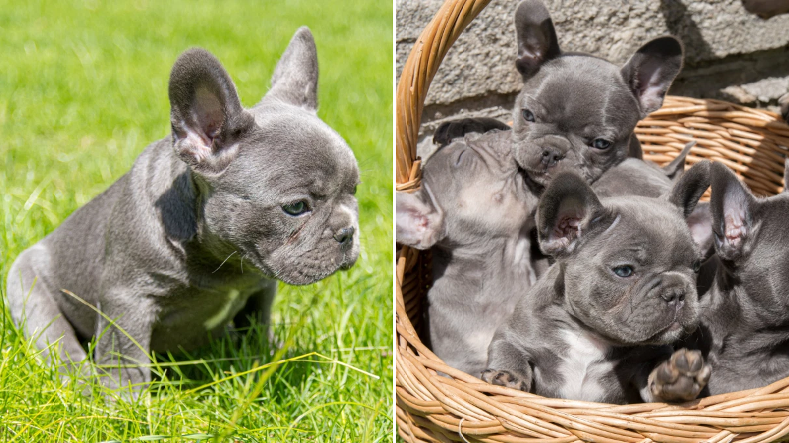
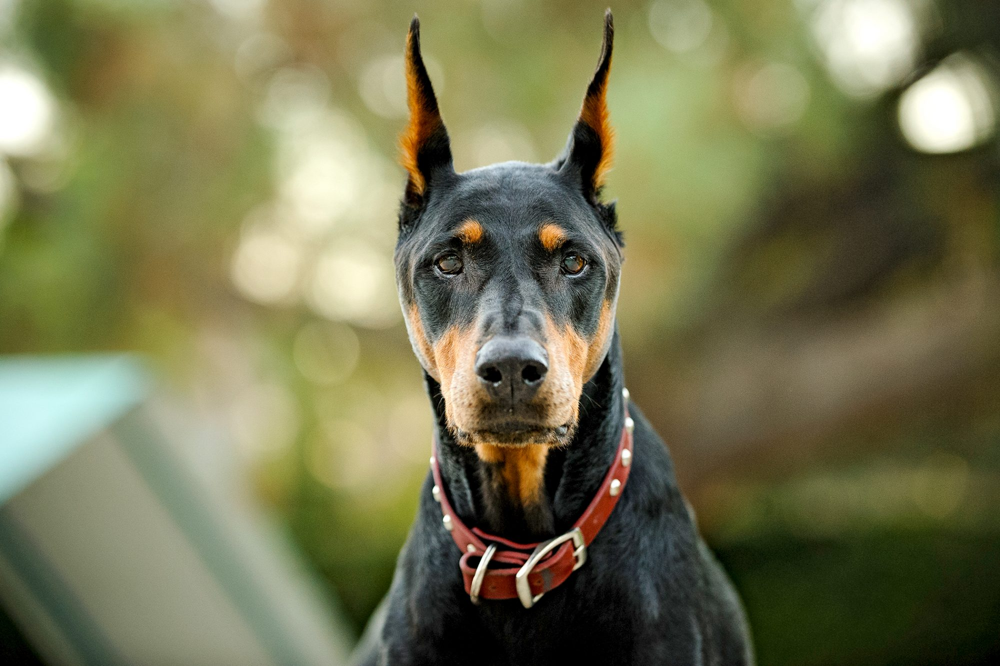

Dogs
Boston terrier

They are known for their boundless energy and fun-loving ways. They can provide endless entertainment with their silly antics. They are also typically sweet, smart, and easy to train. Boston Terriers tend to love people and make great dogs for families.
Hypoallergenic: No
Litter size: 1–6 puppies
Weight: 6–25 lb (3–11 kg)
Life span: 13 – 15 years
Height: 9–15 in (23–38 cm)
Hypoallergenic: No
Litter size: 1–6 puppies
Weight: 6–25 lb (3–11 kg)
Life span: 13 – 15 years
Height: 9–15 in (23–38 cm)
The Boston Terrier is a breed of dog originating in the United States of America. This "American Gentleman" was accepted in 1893 by the American Kennel Club as a non-sporting breed.Color and markings are important when distinguishing this breed from the AKC standard. They should be either black, brindle or seal with white markings. Boston Terriers are small and compact with a short tail and erect ears. The AKC says they are highly intelligent and very easily trained. They are friendly and can be stubborn at times. The average life span of a Boston Terrier is around 11 to 13 years
BullDog

They are a medium-size dog with a thick-set, low-slung body. Their short-muzzled head is massive and square. They have broad shoulders and chests, with thick, sturdy limbs. Although Bulldogs are low to the ground, they are wide and muscula.
Life span: 8 – 10 years
Origin: England
Other names: English Bulldog, British Bulldog
Notes: National animal of United Kingdom
Weight: Female: 18–23 kg
Male: 23–25 kg
Life span: 8 – 10 years
Origin: England
Other names: English Bulldog, British Bulldog
Notes: National animal of United Kingdom
Weight: Female: 18–23 kg
Male: 23–25 kg
also known as the English Bulldog or British Bulldog, is a medium-sized dog breed. It is a muscular, hefty dog with a wrinkled face and a distinctive pushed-in nose. The Kennel Club (UK), the American Kennel Club (US), and the United Kennel Club (US) oversee breeding records. Bulldogs are popular pets; they were the fifth most popular purebreed in the US in 2017 according to the American Kennel Club.Bulldogs have a longstanding association with British culture, as the BBC wrote: "to many the Bulldog is a national icon, symbolising pluck and determination. During World War II, Bulldogs were often likened to Prime Minister Winston Churchill and his defiance of Nazi Germany.The Bulldog Club (England) was formed in 1878, and the Bulldog Club of America was formed in 1890.=
Chihuahua

The Chihuahua is the smallest of all dogs breeds and has smooth and long-haired coat varieties. Originating in Mexico, Chihuahuas were bred for companionship. They are best known for their big, erect ears and large, prominent eyes. The Chihuahua's personality is comparable to a terrier's—fearless and devoted..
Litter size: usually 2–5
Life span: 12 – 20 years
Height: 15–25 cm (6–10 in)
Coat: Short-haired (smooth coat) and long-coat
Mass: 1.5 – 3 kg
Color: Any color
Litter size: usually 2–5
Life span: 12 – 20 years
Height: 15–25 cm (6–10 in)
Coat: Short-haired (smooth coat) and long-coat
Mass: 1.5 – 3 kg
Color: Any color
The Chihuahua is one of the smallest breeds of dog, and is named after the Mexican state of Chihuahua.They are also good for kids and companionship.They occur in diffrent breeds, the longhaired and the shorthaired breed.There are many misunderstanding about the longhaired chihuahuas-they shed alot of hair-whuch is far by wrong it takes about three years for there fur coat to form up rather than there counterparts the short haired whic shed more frequently
Doberman breed

The Dobermann, or Doberman Pinscher in the United States and Canada, is a medium-large breed of domestic dog that was originally developed around 1890 by Karl Friedrich Louis Dobermann, a tax collector from Germany. The Dobermann has a long muzzle. It stands on its pads and is not usually heavy-footed
Life span: 10 – 13 years
Origin: Germany
Temperament: Intelligent, Fearless, Energetic, Obedient, Loyal, Alert, Confident
Colors: Black, White, Fawn, Red & Rust, Black & Rust, Fawn & Rust, Blue, Red, Blue & Rust
Height: Male: 66–72 cm, Female: 61–68 cm
Weight: Male: 40–45 kg, Female: 32–35 kg
Life span: 10 – 13 years
Origin: Germany
Temperament: Intelligent, Fearless, Energetic, Obedient, Loyal, Alert, Confident
Colors: Black, White, Fawn, Red & Rust, Black & Rust, Fawn & Rust, Blue, Red, Blue & Rust
Height: Male: 66–72 cm, Female: 61–68 cm
Weight: Male: 40–45 kg, Female: 32–35 kg
The Doberman is one of the fiercest breeds of dog.They are also good for kids and companionship.They occur in diffrent breeds, the longhaired and the shorthaired breed.There are many misunderstanding about the longhaired chihuahuas-they shed alot of hair-whuch is far by wrong it takes about three years for there fur coat to form up rather than there counterparts the short haired whic shed more frequently